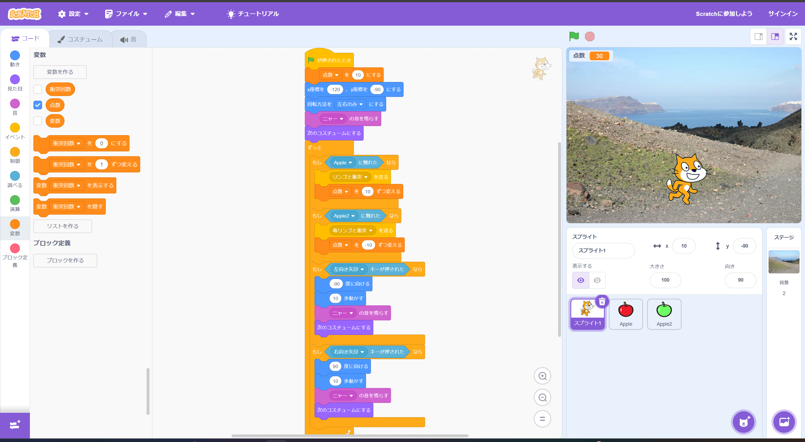

1-2 ゲーム

1.内容
実習では落ちてきたリンゴを猫が拾うと得点が入るゲームを作った。
私はそれに改良を加え、毒リンゴを猫が拾うと、点数が下がるゲームを作った。
得点が0点以下になるとゲームを強制終了するプログラムを入れようとしたが、うまく動かなかったのでプログラムを見直したいと思う。
2.感想
数行で簡単なゲームを作れると知り、驚いた。
毒リンゴに当たると減点されるプログラムまではうまく行っていたが、そこから強制終了するプログラムがうまく作れなかったので、作り直したいと思う。
「スーパーマリオのスターのように無敵になるモードを作る」、「マルチプレイに対応する」などをすると、もっと面白くなるなと感じた。